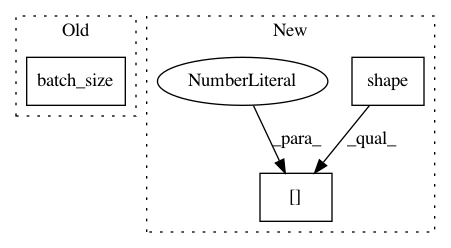

b1e6efbe8f9bc3891c13014370959810067f3cf8,hypergan/samplers/base_sampler.py,BaseSampler,sample,#BaseSampler#Any#Any#,13
Before Change
data = sample["generator"]
width = min(gan.batch_size(), self.samples_per_row)
stacks = [np.hstack(data[i*width:i*width+width]) for i in range(gan.batch_size()//width)]
sample_data = np.vstack(stacks)
self.plot(sample_data, path, save_samples)
sample_name = "generator"
After Change
data = sample["generator"]
width = min(gan.batch_size(), self.samples_per_row)
stacks = [np.hstack(data[i*width:i*width+width]) for i in range(np.shape(data)[0]//width)]
sample_data = np.vstack(stacks)
self.plot(sample_data, path, save_samples)
sample_name = "generator"
In pattern: SUPERPATTERN
Frequency: 3
Non-data size: 3
Instances
Project Name: HyperGAN/HyperGAN
Commit Name: b1e6efbe8f9bc3891c13014370959810067f3cf8
Time: 2017-07-23
Author: mikkel@255bits.com
File Name: hypergan/samplers/base_sampler.py
Class Name: BaseSampler
Method Name: sample
Project Name: HyperGAN/HyperGAN
Commit Name: 9ee744c6c76b7132a6cf6820dffcfcc8f6907e63
Time: 2017-08-07
Author: mikkel@255bits.com
File Name: hypergan/samplers/base_sampler.py
Class Name: BaseSampler
Method Name: sample
Project Name: HyperGAN/HyperGAN
Commit Name: 84b912e4af76896c27b79fea622a1c9e1f68d08d
Time: 2017-11-02
Author: martyn@255bits.com
File Name: hypergan/discriminators/base_discriminator.py
Class Name: BaseDiscriminator
Method Name: layer_filter